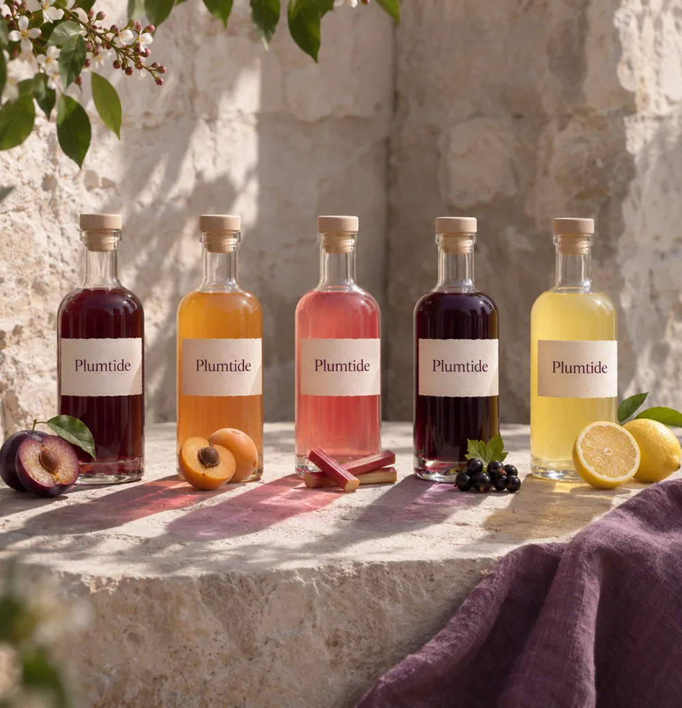

Mosswick Studio · Creative and marketing · Lowmere

Plumtide
Fruit cordials · 2025
- Brief
- A kitchen cordial maker selling at weekend markets needed a brand good enough for the deli shelf.
- Work
- A hand-cut fruit pattern, a warm wordmark and labels that change colour by flavour, shot in morning light.
- Result
- Stocked in 64 delis within a year.